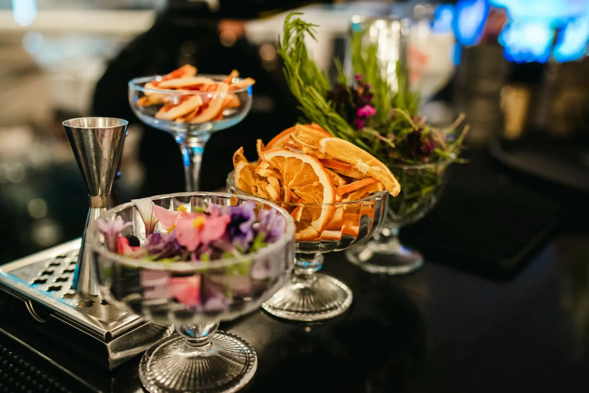

Platon
herbal · citricgin, lămâie, aloe vera, grapefruit, cimbrișor
Limpede, amărui, cu un gând de cimbrișor.
Meniul 2026
 Signature
SignatureCreațiile casei · siropuri făcute de noi
 Classics
ClassicsVerificate de generații

Fără alcoolZero alcool, zero compromis
Meniul 2026
gin, lămâie, aloe vera, grapefruit, cimbrișor
Limpede, amărui, cu un gând de cimbrișor.
vodka, ghimbir, pere, lime
Ghimbirul încălzește, para îmblânzește.
gin, lychee, lămâie, merișoare, sirop de soc
Flori de soc și lychee, ușor acrișor.
whiskey, migdale, portocală, lămâie, bitter
Clasicul, rescris cu migdale și portocală.
rom, fructul pasiunii, lămâie
Soare în pahar, pe ritm cubanez.
aloe vera, grapefruit, lămâie
Răcoritor, cu un final amărui.
sirop de ghimbir, pere, lămâie, apă minerală
Spumos, cu scânteie de ghimbir.
lychee, cranberry, lămâie
Roz, fructat, ușor acrișor.
mere verzi, scorțișoară & migdale, lămâie
Ca o plăcintă cu mere, dar rece.
prosecco, soc, lime, apă minerală
Aperol, prosecco, apă minerală
tequila, grapefruit, lime, Tajín
gin, Campari, vermut
gin, apă tonică, ierburi & citrice
rom, lime, Coca-Cola
Disaronno, portocală, lămâie
← Glisează ca să vezi toate cele 16 cocktailuri →